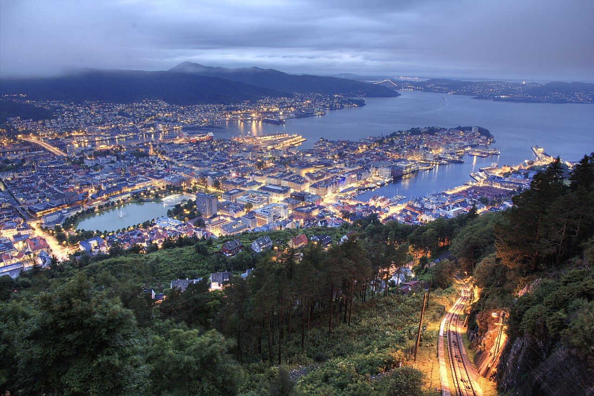

| Bergen, Norway, known as the gateway to the fjords, offers dramatic natural scenery, colorful wooden houses at
Bryggen, and stunning mountain views. It is a picturesque city surrounded by nature.
Main Attractions:
|
 |